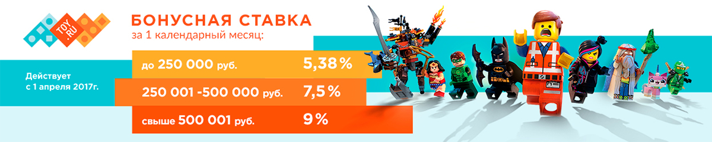

C 1.03.2018 г. ставка для купонных сервисов составит 4,5% от стоимости оплаченного заказа.
С 27.04. снижается вознаграждение за заказы, которые были с применением купона FLOCKTORY (это все купоны, которые начинаются на FL): Для купонных /промокодных площадок при заказе с купоном FLOCKTORY вознаграждение составит - 3,5% Для остальных площадок при заказе с купоном FLOCKTORY вознаграждение составит - 4,38%
Подключайтесь к партнерской программе TOY.RU прямо сейчас!
В интернет-магазине детских игрушек TOY.RU представлены самые известные и популярные мировые бренды: LEGO, Mattel (Barbie, Hot Wheels, Monster High, Ever After High, Mega Bloks), HASBRO (Play-Doh, My Little Pony, Nerf, Transformers), MGA (LOL, MC2, Bratz, Lalaloopsy, Little Tikes), Spin Master (Paw Patrol, Hatchimals, Powerpuff Girls, Kinetic Sand), AURORA, PEG-PEREGO, ZAPF CREATION и другие. Ассортимент магазина включает в себя игрушки для детей от 0 до 14 лет. Он представлен как игрушками для дома (конструкторы, радиоуправляемые модели, куклы, настольные игры, фигурки героев фильмов и мультфильмов и пр.), так и игрушками и комплексами для игр на свежем воздухе (песочницы, горки, детский транспорт – от самокатов и велосипедов до электромобилей).
Toy.ru является прямым розничным направлением крупнейшей оптовой компании ООО «САКС», продукцию которой в России представляют более 3500 предприятий. Начав свою деятельность в 2010 году, компания уже с первого дня работы заняла лидирующие позиции в своей отрасли. На данный момент является крупнейшим в России Интернет-магазином детских игрушек. Сотрудничество со многими мировыми брендами игрушек на эксклюзивной основе позволяет поддерживать самые низкие цены и наиболее оперативно получать новинки, которые тут же появляются на электронной витрине магазина TOY.RU. Данные бренды хорошо себя зарекомендовали на российском рынке, и все игрушки имеют подтвержденные сертификаты качества.